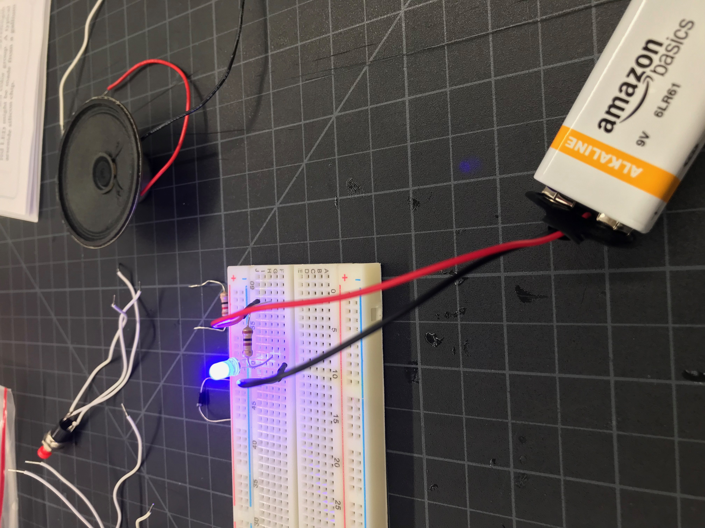
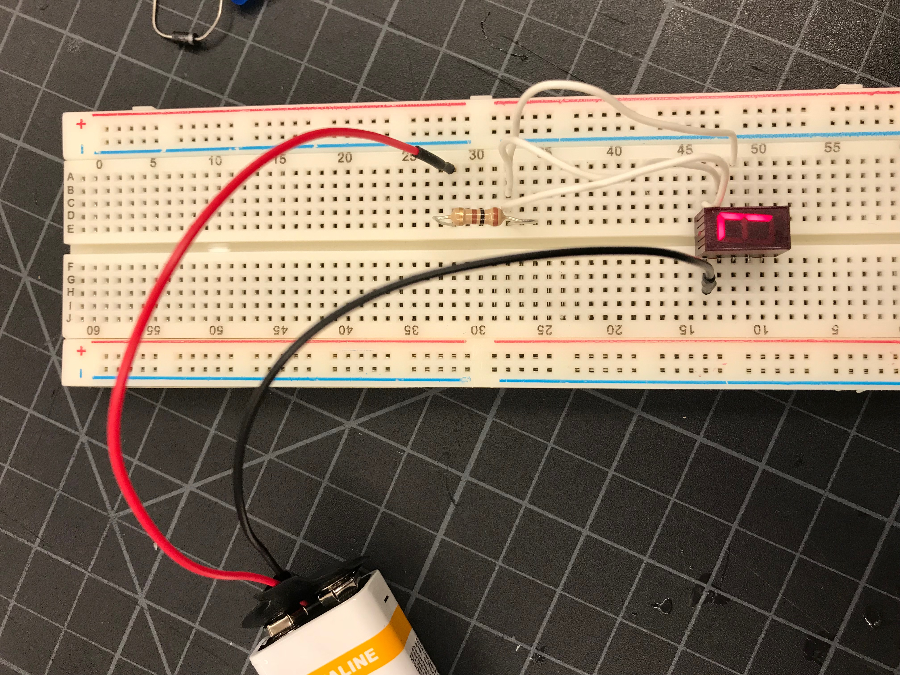

The assignment for this rotation was to complete a series of projects utilizing the Arduino Uno. The Arduino is an easy way to assemble and dissasemble small circuits and gain a visual understanding of how circuits work. I chose three of my projects to display here. The first was a simple circuit with an LED. The second was a little more complicated, making the number seven appear. The third was a dial which could control the intesity of the light emitted from an LED.
 